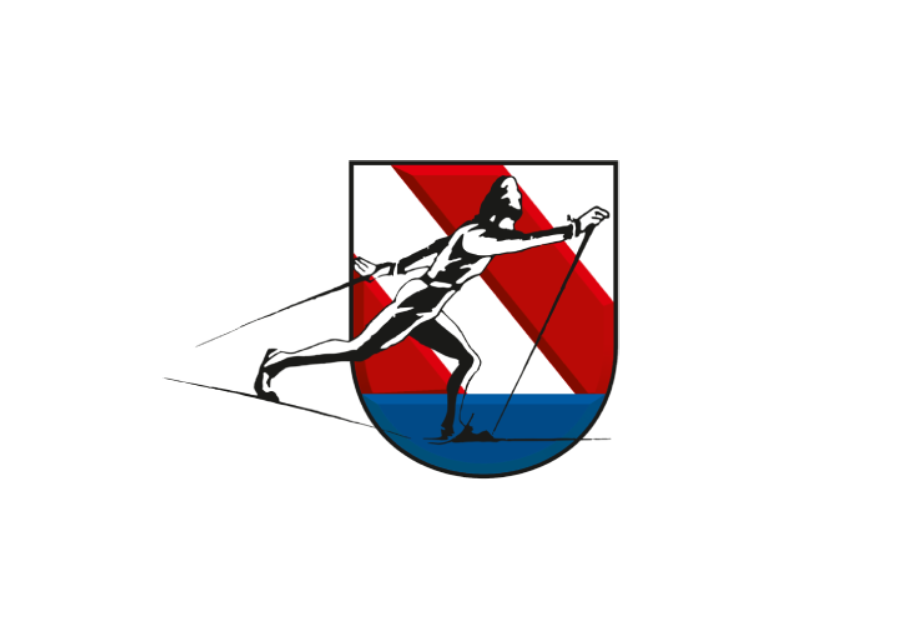

Nejúspěšnější sportovci lyžařského oddílu
Každý rok vozíme titul Mistra České republiky a další umístění na stupních vítězů v žákovských i dorosteneckých kategoriích.
Marek Vašátko (r.01)
- 1. místo MČR klasicky
- 2 x 4. místo ČP
- účast na OPA GAMES (evropské finále dorosteneckých kategorií)
Zuzana Holíková (r.99)
- 14. místo MSJ - sprint klasicky (2019)
- 1. místo OPA cup - štafeta (2019)
- 2. místo OPA cup - sprint klasicky (2019)
- 1. místo MČR – 5 km klasicky (2019)
- 21. místo sprint volně MSJ v Gomsu (Švýcarsko 2018)
- 2. místo na finále evropského poháru (Zwiesel 2018)
- 2. místo sprint klasicky EYOWF (Evropská olympiáda mládeže) v Erzurumu (Turecko 2016)
Šárka Jirásková (r.95)
- 9. místo sprint volně Rumunský Brašov 2013
- 25. místo sprint MSJ ve Val di Fiemme (Itálie 2014)
- 8. místo štafeta MSJ ve Val di Fiemme (Itálie 2014)
Petr Remeš (r.94)
- 23. místo sprint klasicky MSJ 2013 v Liberci
Karel Píč (r.93)
- 1. místo MČR 4/4 km K/V pursuit 2009
- 1. místo ČP v celkovém žebříčků 2009
- 23. místo sprint klasicky na EYOWF 2011 (Evropská olympiáda mládeže) v Liberci
- 8. místo štafety na EYOWF 2011 v Liberci


Historie
Petr Michl (hlavní trenér, trenér dorostenců a juniorů)
- 14x vítěz Mistroství České republiky
- 5x účast na Mistroství světa
- reprezentace ČR na 3 olympiádách: Nagano 1998, Salt Lake City 2002, Turín 2006

Ivana Janečková
- několik titulů z MČR od žactva přes dorost až po dospělé
- reprezentace ČR na olympiádě v Turíně 2006 a Vancouveru 2010
Petra Letenská
- několikanásobná mistryně ČR
- účast na několika Mistrovství světa